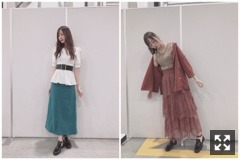
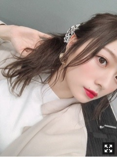
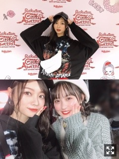

映画のお供は絶対チュロス
お久しぶりになってしまいました。
気づけばもう１０月になるのですね。
いや〜、時の流れが早すぎて
全然頭が追いつかないです、、、
ここ最近もばばーっとあっという間に
毎日が過ぎていきました。
充実しております◎
書きたいことたくさんあって
何からお話しよう、、
いくつかに分けますね◎
だいぶ前になってしまいましたが個別握手会
ありがとうございました〜〜

左：１部
スカートしわしわ、、座り方気をつけます( .. )
トップスは白石さんに頂いたもの❤︎
とっても可愛いの(；；)
大切に着させていただいています♡
右：４.５部
秋コーデ︎︎︎︎✌︎
今年は特にワントーンコーデがめちゃめちゃに好きで
ベージュ、グレー、ブラウンの
ワントーンコーデが特にすき。
同じ色でもちょっと深みが違ったり
くすみ加減が違ったり、、かわいい
あとセットアップがやはりかわいい
絶対に目がいってしまう。
秋、好きすぎる、、
メイクも好き。香りも好き。
お仕事帰りすっかり暗くなった外を歩いてたら
風が空気が匂いが心地よすぎて笑顔になった( '-' )
四季の中で一番懐かしいと感じる季節。
理由は分からない。不思議
また暑さが戻ってきているので
お洋服選ぶのが中々難しい、、
早くニット着たいなあ〜
オレンジリップ手に入れたので
２．３部の写真なくて、
ごめんなさい( .. )
お花もありがとう❁︎
どれも素敵だ〜(；；)
さて！昨日はGirlsAwardに
出演させて頂きました！
GRLさんのステージと、
Bershkaさんのステージ！
緊張もするけど何よりとても楽しいです。

GRLさんでは白のワントーンコーデ❤︎
ものすごく好みでした！
みんな可愛かったなあ(；；)

こちらはBershkaさんのステージ！
GRLさんとは真反対のかっこいい感じでした〜
さくらちゃんと❤︎
掛け声や声援、ありがとうございした。
シンクロニシティ、裸足でSummer、
夜明けまで強がらなくてもいい、
インフルエンサーの４曲！
たくさん汗かきました〜
お越しくださった皆様、
LINE LIVEにてご覧くださった皆様、
ありがとうございました！
ランウェイは１０／５に
さくらちゃんとTGC北九州に出演させて頂きます！楽しみ〜
告知◎
〜雑誌
▽「anan」
乃木坂46だらけです❤︎
わたしは蘭世さんとせいらちゃんとゆるニットのページに！！
▽「with」
乃木坂OL企画に登場しています！
▽「GIRLS STREAM」
楓と2人で表紙です！嬉しい〜
発売中です！
▽１０／４ 「日経エンタテインメント！」
〜ラジオ
▽１０／６ 「乃木坂46の『の』」
文化放送18:00〜 北川悠理ちゃん、矢久保美緒ちゃん
〜イベント
▽１０／５ 「takagi presents TGC KITAKYUSHU by TOKYO GIRLS COLLECTION」
つい先日、飛鳥さんと松村さんと
上海へ行ってきたのです！
全部展を開催させて頂くということで、
一足お先に観にいってきました〜！
日本とはまた違ったビジュアル、
そして新しい展示の仕方まで。
見所満載です◎
相変わらず可愛い、、
わたしもパーカー頂いちゃいました！
bilibiliさんの生配信にも出演させて頂きました。
楽しかったなあ〜
よろしくお願いします◎
大好きな若月さん❤︎
舞台「GOZEN」観劇しました〜！
私の好きなストーリーすぎました、、
毛利さん！！やはり素敵です。
日々運命の選択の中で生きていて、
自分の運命のためには
たとえ犠牲をはらってでも
進んでいく強い意志が大切なのだと。
はあ、苦しくなるくらい見入ってしまった。
キャストの皆様のお芝居が物凄く素敵でした。
わたしもこういうお話の中に
飛び込んでみたい！！！
軍団長とたくさんお話できました〜
相変わらず好きが止まりません( .. )
若月さんとの夢、叶いますように。
では、
また更新します。
またね
おやすみなさい
色んな場所で色んな方から刺激を受けて
言葉をもらって、それが今の私の糧になるのです
自信をつけたいです、
Original：https://www.nogizaka46.com/s/n46/diary/detail/52860?ima=4941&cd=MEMBER